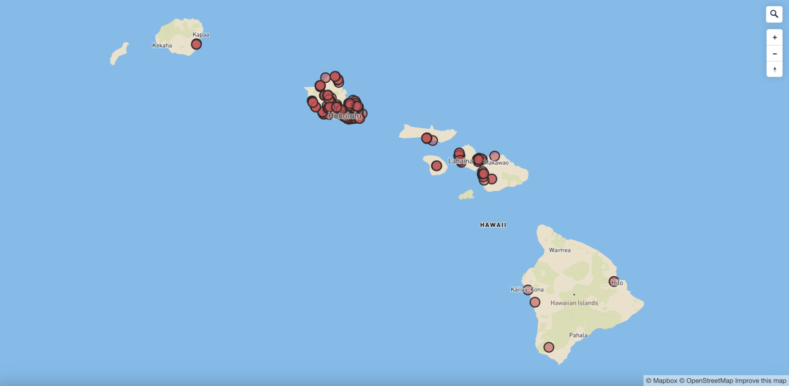
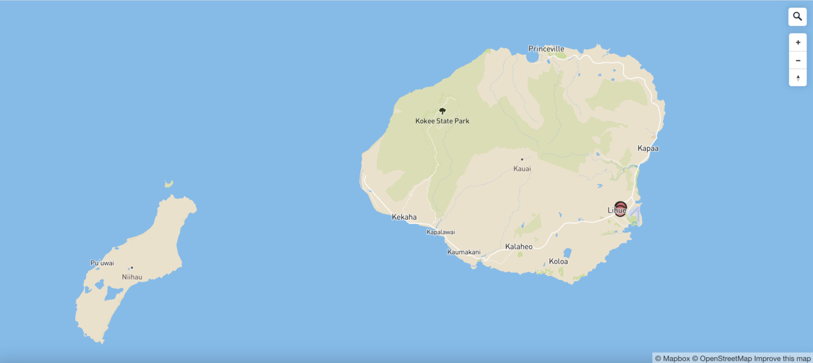
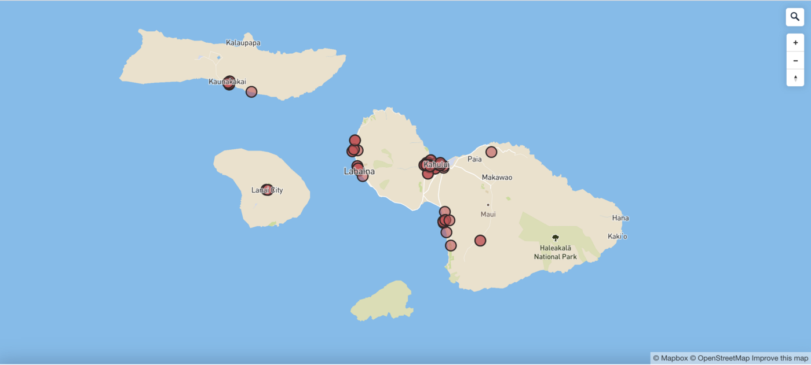
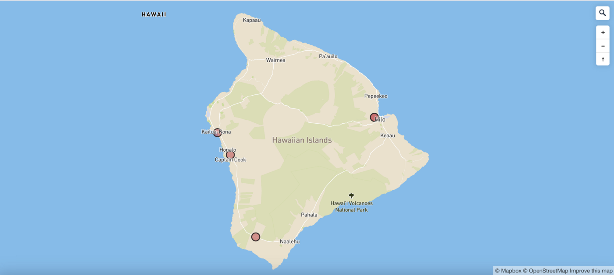

NEW YORK -- Hawaii’s shortage of doctors has been exacerbated by the pandemic, according to a report.
Here are the locations of some 2,000 primary care physicians in the state:
(Each dot represents a doctor’s office)

An overview of primary care physicians in Hawaii. Doctors are heavily concentrated in Honolulu county.

Kauai County

Honolulu County

Maui County

Hawaii County
Methodology
1. Scraped primary care physicians in Hawaii on Healthgrades
2. Converted addresses to geocoordinates using Google Spreadsheet and Geocode by Awesome Table
3. Mapped the geocoordinates in Mapbox
For more go to my Github, BKNews